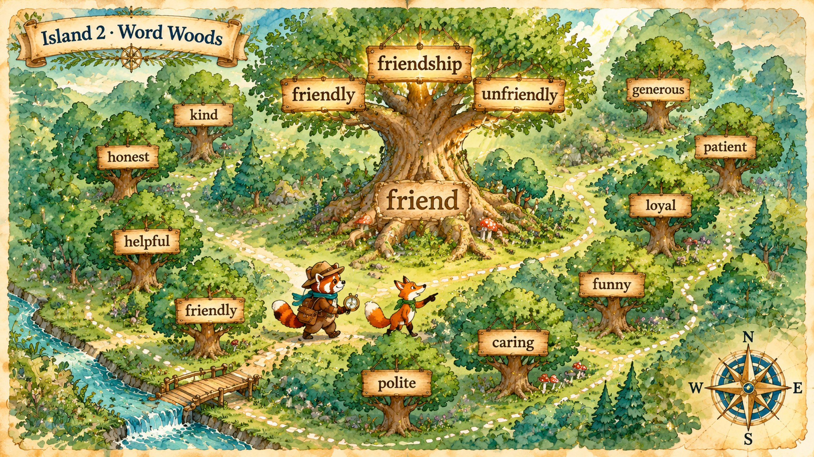
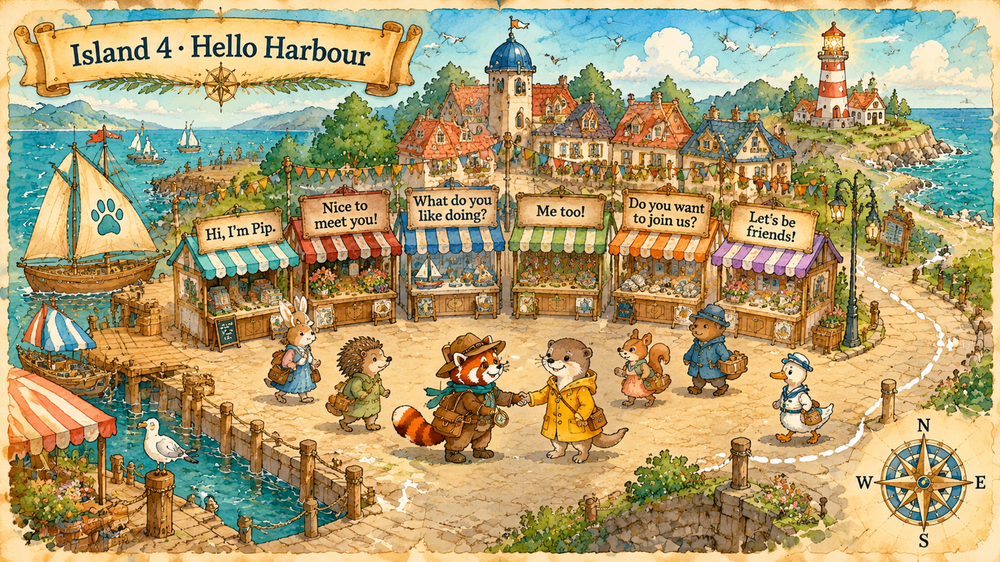
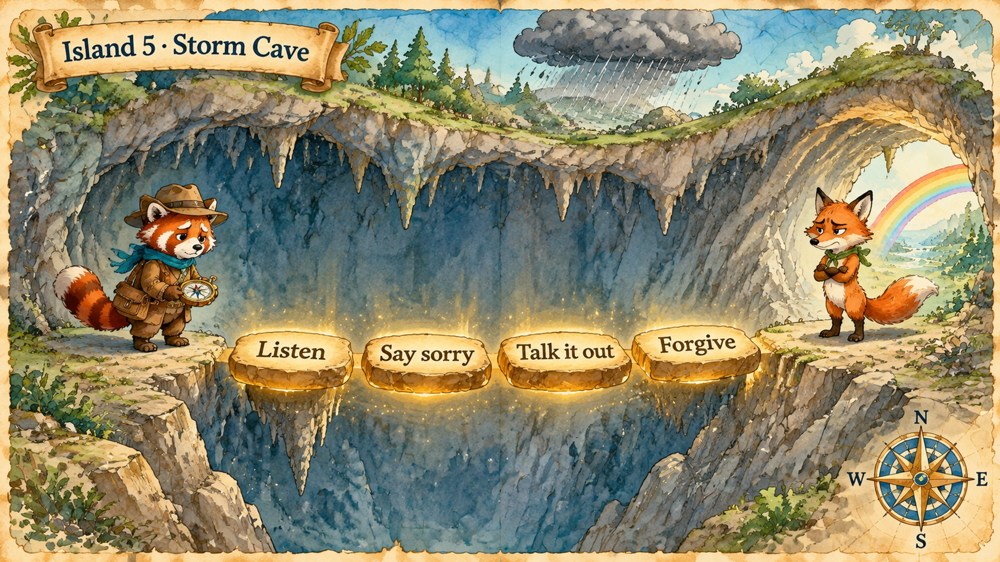
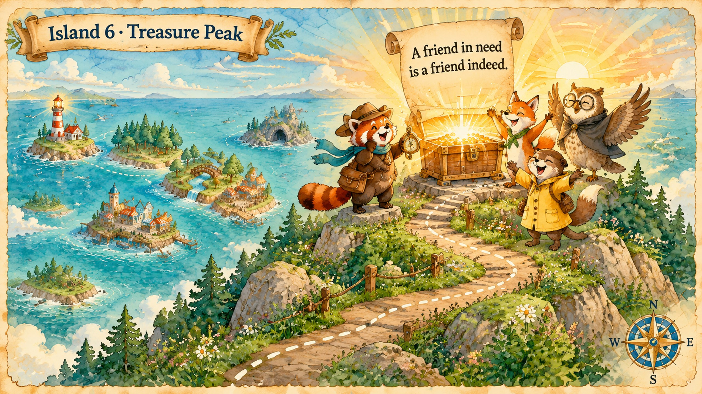
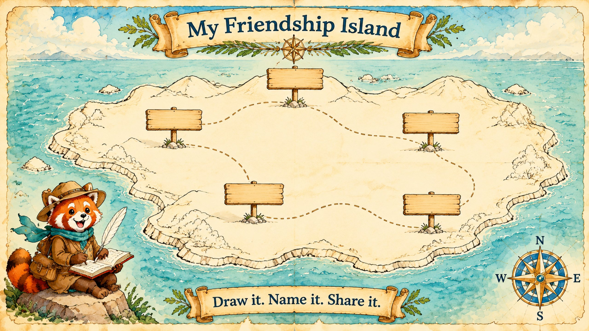

Welcome aboard, explorers!
欢迎登船，小探险家们
⚓ Before we sail: How do you feel?
On the first day at a new school, I feel …
🧭 Our route today
- Lighthouse Isle — the concept: What is a friend?
- Word Woods — words that describe a good friend
- Twin Bridges — grammar: like vs look like
- Hello Harbour — expressions for making friends
- Storm Cave — problem-solving: sorry & advice
- Treasure Peak — wisdom: proverbs & your own writing
Tip: click an island on the map, or press → to sail.
What Is a Friend?
什么是朋友？
💡 The big idea
A friend is someone you know well, like, and trust.
- Best friends — very close; you share secrets and help each other. 挚友
- Friends — you enjoy spending time together. 朋友
- Acquaintances /əˈkweɪntənsɪz/ — people you know only a little. 熟人
Friendships can move between the rings — an acquaintance today can be a best friend next year!
🎯 Challenge: Which ring?
Tap a person, then tap a ring.
❤️ Best friends
😊 Friends
👋 Acquaintances
🗣 Say it!
Finish the sentence with a partner:
“To me, a friend is someone who ______.”
e.g. … who listens to me / … who helps me when I'm in trouble / … who makes me laugh.
Notice: someone who + verb-s → someone who helps, who listens.
Word Woods
好朋友的品质词
🌳 Ten trees, ten qualities (tap a card to flip · 🔊 to listen)
🌱 The word-family tree
- -ship turns a person into an idea: member → membership, leader → leadership.
- un- means “not”: unkind, unhelpful, impolite (im- before p!), dishonest (dis-!).
- ⚠️ friendly is an adjective, not an adverb: She is friendly. She talks friendly.
🔍 Challenge: Who is it?
Twin Bridges
What is she like? 还是 What does she look like?
🌉 The two bridges
= What kind of person is she? (性格 · inside)
➜ She is kind / funny / honest.
➜ She is always ready to help.
= How does she look? (外貌 · outside)
➜ She is tall / short / slim.
➜ She has long hair. She wears glasses.
🔑 Here like is a preposition meaning “similar to” (像), not the verb “喜欢”. Compare: What does she like? = What things does she enjoy? → She likes music.
🎯 Challenge: Which bridge?
Read the answer. Which question was asked?
🚧 Don't fall into the river!
What is she look like? → What does she look like?
She has kind. → She is kind. (adjective → be)
He have short hair. → He has short hair. (he/she → has)
What does he like? — He is funny. → What is he like? — He is funny.
Hello Harbour
交朋友的常用表达
🪜 Five steps to a new friend
- Greet — Hi! / Hello! 🔊
- Introduce — I'm Pip. Nice to meet you! 🔊
- Ask — What do you like doing? / Where are you from? 🔊
- Find something in common — Me too! / So do I! 🔊
- Invite — Do you want to join us? / Let's … together! 🔊
🧺 Friendship phrases (collocations)
- make friends with sb. 和…交朋友
- get along (well) with sb. 与…相处(融洽)
- have … in common 有…共同点 — We have a lot in common.
- share sth. with sb. 与…分享
- help each other 互相帮助
- keep in touch 保持联系
⚠️ make friends with — always plural friends!
💬 Challenge: Help Pip talk to Bea
Storm Cave
朋友闹矛盾怎么办？
🙏 Saying sorry & answering
Say sorry: I'm sorry I lost your book. / It was my fault. / I'll buy you a new one.
Answer: That's OK. / Never mind. / Don't worry about it.
⚠️ “Never mind” answers “Sorry”. To answer “Thank you”, say “You're welcome.”
🩹 Giving advice
should + base verb — You should say sorry. You should to say sorry.
Why not + base verb? — Why not talk to her?
How about + verb-ing? — How about writing him a card?
🎯 Challenge: The advice clinic
Treasure Peak
关于友谊的名言
📜 The scroll
“A friend in need is a friend indeed.” 🔊
A friend who helps you when you are in trouble is a true friend. 患难见真情
“Birds of a feather flock together.” 🔊
“Make new friends, but keep the old; one is silver and the other gold.” 🔊
海内存知己，天涯若比邻。— 王勃
🎯 Challenge: Match the wisdom
My Friendship Island
用今天的钥匙，写写你的朋友
✍️ Build your paragraph
🏝 My friendship postcard
🎒 Take home: the 6 keys
- Concept — best friends · friends · acquaintances
- Words — kind, honest, loyal… · friend → friendly → friendship
- Grammar — What is she like? vs What does she look like?
- Expressions — make friends with · get along with · have … in common
- Problems — I'm sorry… · You should… · How about …ing?
- Wisdom — A friend in need is a friend indeed.
Exit ticket 3-2-1: 3 quality words · 2 friendship phrases · 1 sentence about your friend.